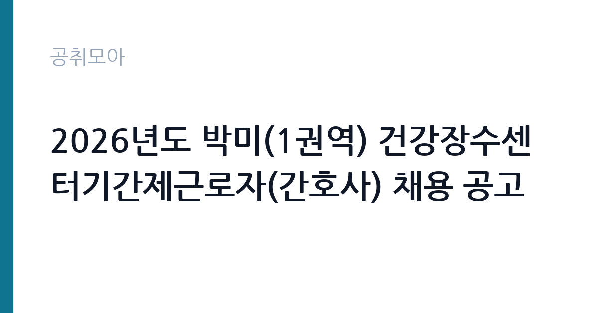

[지자체] 2026년도 박미(1권역) 건강장수센터기간제근로자(간호사) 채용 공고
서울특별시 금천구 보건소 보건지소 · 서울 · 마감 2026-10-06 (D-4) · 출처 나라일터

한눈에 보는 모집 조건
| 기관 | 서울특별시 금천구 보건소 보건지소 |
|---|---|
| 공고명 | 2026년도 박미(1권역) 건강장수센터기간제근로자(간호사) 채용 공고 |
| 고용형태 | 기간제 |
| 근무지 | 서울 |
| 게시일 | 2026-10-02 |
| 마감일 | 2026-10-06 (D-4) |
지원자격, 이렇게 읽으세요
- 기간제근로자(간호사) 2명
- 접수 ~2026-10-06 마감
- 세부 조건은 원문 공고문 확인
간호사 채용이므로 간호사 면허증 보유가 필수 요건입니다. 원문 발췌에 별도 경력 조건이 나와 있지 않아 신규 간호사도 지원할 수 있는 것으로 보이나, 정확한 응시 자격은 원문 공고에서 확인하십시오. 방문건강관리 업무가 중심이므로 지역사회간호나 방문간호 경험이 있으면 유리합니다. 접수처가 박미보건지소이며 이메일(sunmi17@geumcheon.go.kr) 접수도 가능해 지원 경로가 편리합니다. 접수 시간이 09시부터 18시까지이므로 마감일에는 서둘러야 합니다. 문의는 건강장수센터 02-2627-2393으로 하시면 됩니다.
이 공고의 포인트
이 공고의 매력은 서울 근무의 방문간호 직무라는 점입니다. 건강장수센터는 어르신과 취약계층의 건강을 지역사회에서 직접 돌보는 서울시 특화 사업으로, 병원 임상과는 다른 보람을 느낄 수 있는 자리입니다. 2명 모집이라 1명 공고보다 합격 기회가 넓습니다. 금천구의 종전 유사 공고에서는 12개월 계약으로 운영된 전례가 있어 비교적 긴 근무가 기대되며, 정확한 계약기간은 원문에서 확인하십시오. 타 자치구의 2025년 유사 공고에서는 월급 약 246만원에 출장비 월 14만원이 지급된 바 있어 보수 참고선도 있습니다. 서울 거주 간호사라면 출퇴근 부담이 적습니다.
전형은 어떻게 진행되나
전형은 서류전형과 면접시험으로 진행됩니다. 면접은 2026년 10월 12일 16시 30분에 금천구보건소 4층 보건교육실에서 실시됩니다. 서류전형에서는 간호사 면허와 관련 경력, 지원동기를 평가하므로 방문간호나 지역사회간호 경험을 중심으로 서류를 작성하십시오. 면접에서는 어르신과 취약계층을 대하는 태도와 방문 현장에서의 대응 능력을 평가합니다. 거동이 불편한 어르신 가정을 방문했을 때의 상황 질문이 나올 수 있으니 관련 답변을 준비하십시오. 접수 마감부터 면접까지 일주일도 안 되므로 지원과 동시에 면접 준비를 시작하십시오.
원문에서 확인한 전형 방식
가. 채용분야 : 금천구 박미(1권역) 건강장수센터 기간제 근로자 나. 채용인원 : 기간제간호사 2명 다. 공고기간 : 2026. 10. 2.(금) ~ 2026. 10. 6.(화), 4일간 라. 서류접수 : 2026. 10. 2.(금) ~ 2026. 10. 6.(화), 5일간, 09:00~18:00 마. 접수장소 - 방 문 : 박미보건지소(금천구 시흥대로 12길 10-5, 동네방네 마을이음센터 2층) ※ 방문접수 월~금요일, 09:00~18:00 - 이메일: sunmi17@geumcheon.go.kr 바. 면접시험 : 2026. 10. 12.(월) 16:30, 금천구보건소 4층 보건교육실 사. 문 의 : 금천구 박미(1권역) 건강장수센터(박미보건지소) ☎ 02)2627-2393
이런 분께 추천해요
- 방문간호나 지역사회간호에 관심 있는 간호사 면허 보유자께 추천합니다. 병원과 다른 현장 간호의 보람을 느낄 수 있는 자리입니다.
- 서울 근무의 공공기관 경력을 쌓고 싶은 신규 간호사께 추천합니다. 계약직이지만 보건소 경력은 이후 취업에 강점이 됩니다.
- 접수 기간이 짧아도 이메일로 바로 지원할 수 있는 분께 추천합니다. 서류를 갖춘 분이라면 오늘이 합격의 기회입니다.
지원 전 체크리스트
- 접수 기간이 10월 2일부터 10월 6일까지 단 5일이므로 마감일을 놓치지 마십시오. 이메일 접수 시 접수 확인 회신을 반드시 확인하십시오.
- 간호사 면허증 사본과 경력증명서를 미리 준비하십시오. 면허번호와 발급 상태에 이상이 없는지 확인하십시오.
- 계약기간과 보수, 근무시간을 원문 공고에서 확인하십시오. 방문 업무 특성상 출장비와 교통비 지원 조건도 함께 보십시오.
- 면접이 10월 12일 16시 30분 금천구보건소에서 열리므로 장소와 시간을 미리 확인하고 방문간호 사례를 정리해 두십시오.
모집 일정과 제출 타이밍
접수는 2026년 10월 2일부터 10월 6일까지이며, 주말을 빼면 실질 접수일은 사흘 남짓입니다. 면접은 10월 12일에 실시되므로 서류 합격자는 발표 즉시 면접 준비에 들어가야 합니다. 오늘 바로 이메일로 지원서를 보내고 면허증 사본을 첨부하는 것이 가장 안전합니다. 방문 접수를 원하면 박미보건지소의 운영 시간을 확인하고 09시부터 18시 사이에 방문하십시오. 면접 장소인 금천구보건소 4층 보건교육실의 위치를 미리 파악해 두면 당일 동선이 여유롭습니다.
직무 이해하기: 지자체
건강장수센터 간호사는 취약계층 어르신을 대상으로 방문건강관리를 수행합니다. 금천구의 종전 유사 공고에 따르면 취약계층 대상자 방문건강관리가 핵심 업무이며, 박미보건지소를 거점으로 1권역 지역을 담당합니다. 구체적으로는 어르신 가정을 방문해 혈압과 혈당 등 기초 건강 상태를 측정하고, 만성질환 관리 교육과 복약 지도를 하며, 필요시 보건소와 복지 서비스로 연계합니다. 건강장수센터는 서울시의 어르신 건강 특화 사업으로 운동과 영양, 만성질환 예방 프로그램을 함께 운영하므로 간호사는 프로그램 운영 지원도 맡습니다. 병원과 달리 환자 한 명 한 명과 깊이 만나는 현장 중심 직무입니다.
자기소개서 작성 팁
지원서와 자기소개 성격의 서류에는 어르신과 취약계층을 대했던 경험을 중심으로 적으십시오. 실습이나 봉사활동에서 만났던 어르신 사례와 그때 느낀 점을 구체적으로 쓰면 진정성이 전달됩니다. 방문간호의 어려움을 이해하고 있다는 점을 보여주는 것이 중요하므로, 현장의 고충과 그에 대한 본인의 각오를 솔직하게 기술하십시오. 지역사회간호 과목 수강 경험이나 관련 교육 이수가 있다면 빠짐없이 적으십시오. 지원동기에는 왜 하필 금천구 건강장수센터인지 지역적 이유를 함께 밝히면 설득력이 높아집니다.
면접 준비 포인트
면접에서는 어르신 응대 태도와 현장 대응력을 중심으로 준비하십시오. 방문 가정에서 응급 상황이 발생하면 어떻게 대처할 것인지, 협조를 거부하는 대상자를 어떻게 설득할 것인지 묻는 상황 질문이 나올 수 있습니다. 혈압 측정과 만성질환 상담 같은 기본 실무를 설명할 수 있어야 하며, 개인정보 보호 의식도 밝혀야 합니다. 단기 계약직이라도 계약기간 동안 책임감 있게 일하겠다는 태도를 보이는 것이 중요합니다. 금천구 지역 특성과 박미보건지소의 역할에 대해 미리 공부하고 가면 관심을 어필할 수 있습니다.
급여·근무조건 읽는 법
보수는 원문 공고문의 보수 항목에서 확인하십시오. 참고로 서울시 타 자치구의 2025년 건강장수센터 간호사 유사 공고에서는 월급 약 246만원에 출장비 월 14만원이 지급된 바 있습니다. 금천구 이번 공고의 실제 금액은 원문이 기준이며 방문 업무 특성상 출장비나 교통비 지원 조건을 함께 확인하십시오. 기간제근로자로 4대보험이 적용되며 계약기간에 따라 퇴직금 지급 대상 여부가 갈리니 해당 조건도 원문에서 보십시오. 실수령액은 월급에서 4대보험 본인부담금과 소득세를 제외한 금액입니다. 경쟁률과 합격선은 공개되지 않으므로 원문에서 확인되는 정보가 없습니다.
자주 묻는 질문
- 접수 기간이 5일뿐인데 지금 지원해도 됩니까?
접수가 10월 6일까지이므로 서류를 갖춘 분이라면 이메일로 바로 지원할 수 있습니다. 접수 확인 회신을 받고 면접 준비를 시작하십시오. - 신규 간호사도 지원할 수 있습니까?
원문 발췌에 경력 조건이 별도로 나와 있지 않아 면허 보유자라면 지원할 수 있는 것으로 보입니다. 다만 정확한 응시 자격은 원문 공고에서 확인하십시오. - 건강장수센터 업무가 병원과 어떻게 다릅니까?
병원이 치료 중심이라면 건강장수센터는 예방과 관리 중심입니다. 어르신 가정을 방문해 건강 상태를 측정하고 교육과 상담을 하며 복지 서비스로 연계하는 지역사회 현장 직무입니다.
함께 보면 좋은 공고
[지자체] 제주특별자치도 임기제공무원 임용시험 시행계획 공고(시민고충처리위원회 고충민원전문조사관 분야) — 마감 2026-10-19[지자체] 2026년 제9회 대전광역시 동구 지방임기제공무원 채용시험 시행계획 공고(기록물관리 전문요원) — 마감 2026-10-14[지자체] 시간선택제임기제공무원[마급]보건행정 채용 공고 — 마감 2026-10-07출처: 나라일터 공개정보를 바탕으로 공취모아가 정리한 안내글입니다. 모집 조건·일정은 변경될 수 있으니 지원 전 반드시 원문 공고문을 확인하세요. 본 글은 정보 제공용이며 합격을 보장하지 않습니다.